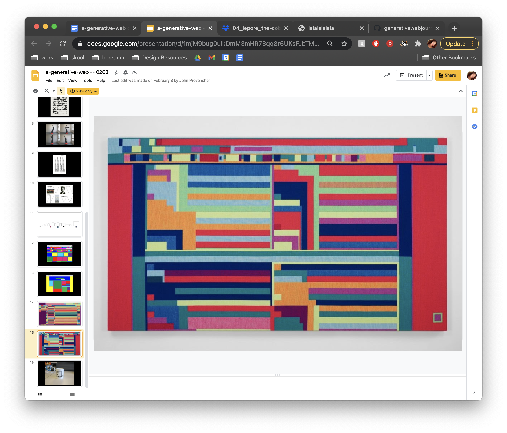
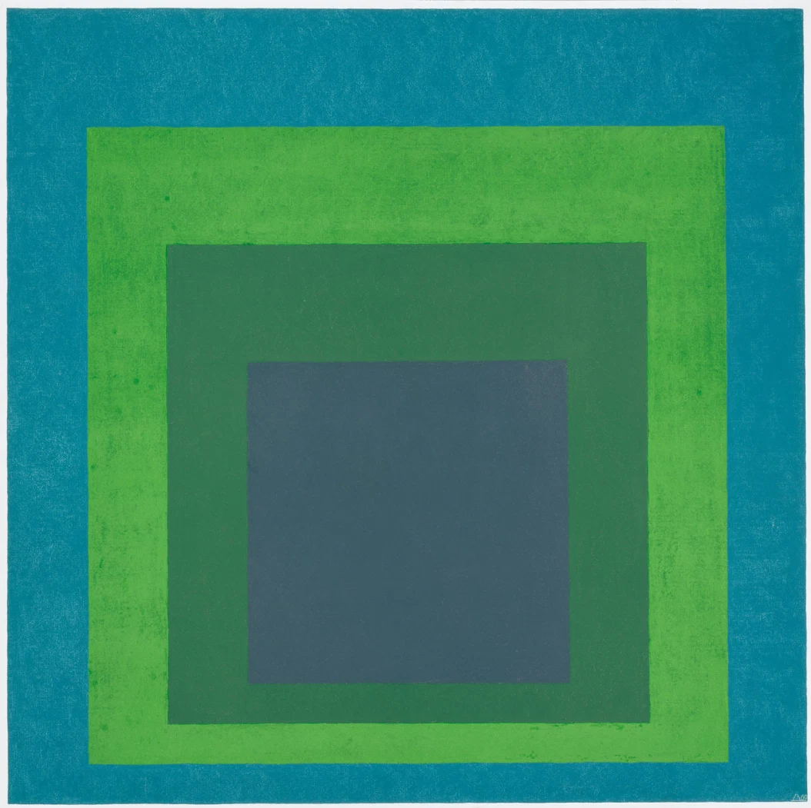
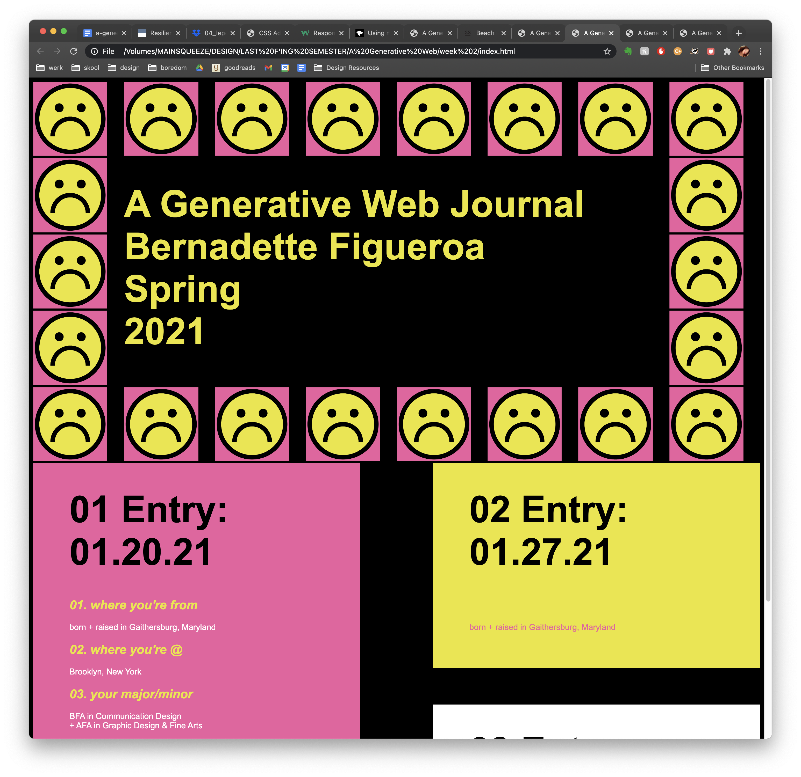
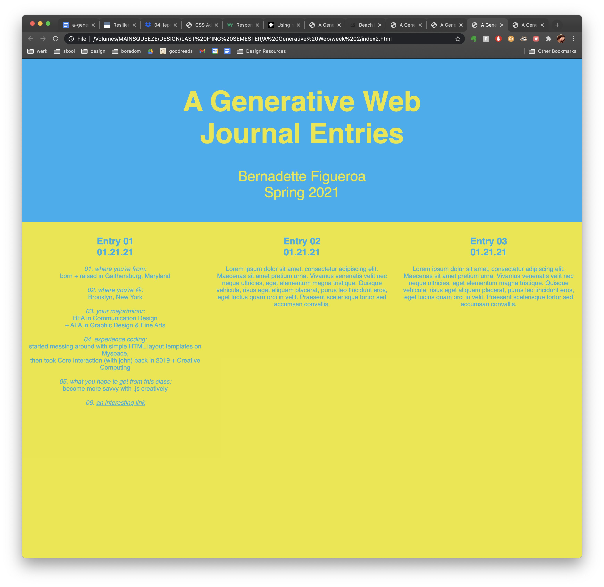
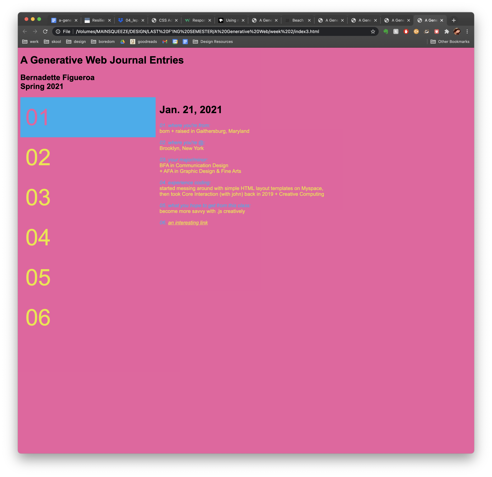

a generative web journal bernadette figueroa spring 2021
“Sometimes I think I'm a nihilist because it doesn't matter, none of this matters. We're all following the will of some unknowable higher power, probably the stars manipulating our cellular magnets. We think we have all this agency, but do we? Do we really? Can you choose to be brave when you were born a coward? Can we be deprogrammed from the brainwashing that we grew up in? I think we can, but I think we need a lot of help.”
—Ottessa Moshfegh
01/20/2021
01. where you're from: born + raised in Gaithersburg, Maryland
02. where you're @: Brooklyn, New York
03. your major/minor: BFA in Communication Design + AFA in Graphic Design & Fine Arts
04. experience coding: started messing around with simple HTML layout templates on Myspace, then took Core Interaction (with john) back in 2019 + Creative Computing
05. what you hope to get: from this class become more savvy with .js creatively
06. an interesting link: interesting link
01/27/2021
“The art of living may depend on whether one is willing to live as if it were an adventure.”
This was an energizing article to read and a good topic to ponder about, since progress
on minimizing the pandemic seems dull but what can one expect when we didn’t react
fast enough. It’s about the journey, not the destination. And dictating the way you prefer
to live thrives off a positive mindset and a hunger for a challenge.
02/03/2021

During the lecture, I was drawn to this particular work of art. Boxy and vibrant hues of various shapes and sizes of squares and rectangles. Josef Albers is one of my favorite artists, which this artwork reminded me of Albers’ work. But the way the shapes are put forth (on the image on the left) compared to The Homage of Squares, they depict contrasting tones. With Alber’s, it feels like I am sinking into the artwork and creates a trancelike exuberance that makes me not want to look away. The one on the left is sporadic and my eyes cannot fixated on one section so it’s kind of flustering to stare at for a long period of time.
02/10/2021

I chose to go with first option, mainly because I felt it exuded my personality well and I loved it out of the three options I had presented. It's going to be fun coding since every entry will have a different color way, but contrained to the colors I've assigned the design schema.
02/17/2021
I’m so glad The Social Dilemma came at a period in time where everyone is secluded in their homes. To really let the critical thinking and information marinate in their brains. At the end of the day social media platforms like Instagram and Twitter are indeed business, and they need to make their profit. Maybe if these technological innovations were carefully thought about and how it would affect society, maybe perhaps people in charge would’ve had a better hold on the situation. American society has been fucked for decades, the decay is really starting to take place. Technology can’t save us, but how we do stop reality and fantasy to stop clashing?
02/24/2021
The premise of the Internet was founded on the principle that people could use this tool to expand their knowledge on anything and get fresh perspectives. But in reality, people were only feeding themselves knowledge that advanced their initial theories/thoughts. The heavy use of algorithms push people into their own personal bubbles. Even the definition of community radically changed due to the nature of communities online, where everyone shared the same values versus IRL communities were an interesting mix of opposing views lived in harmony with one another.
My proposal is to create a satirical search engine that shows a plethora of information on a topic, showing the good and the bad. This topic is highly relevant so it should be treaded lightly on how brutal it’s going to be, considering I might want to tie in how polarized politics or opinions have gotten due to technological determinism. I have to envision the concept into some satirical narrative with technicality.
03/03/2021
03/10/2021
03/24/2021
03/31/2021
To think we really all have digital footprints online is very frightening, I know I've went through all my posts on Facebook and deleted all the embarrassing status updates I've posted throughout the years. (I still use my Facebook I made from like 10 years ago).
It's also interesting how the digital footprint really made cancel culture come alive. I think in this day of age everyone is so uptight and has a stick up their ass about being a good person, or just coming off as an angel, but like let's face it
we've all said things we regret, people are young and ignorant and slip up and say the wrong things!!!!!! But it's stupid that some people have the energy to go through people's tweets or cyberstalk people to death just to find dirt on them. Talk about nonproductive energy usage.
04/07/2021
Anything man-made can be learned by any other human and so things get hacked!!!!!! That is the exact reason why I would never submit to putting something like the Neuralink in my head. Elon is cool but what the heck is he thinking??? He's like kind of like the evil genius of our times.. When he released those flamethrowers I remember he was like, "I told people not to buy them they're dangerous". It's kind of like his consumers are his social experiements.
But going back to the article, I feel like we're just dooomed. Like who really reads through all that copyright? And even if one does, the jargon is so hard to freaking read. Obviously they do that on purpose. We're so doomed.
04/14/2021
I'm def a fan of skeuomorphism. Like the article says, it replicates what we know in the real world, helping us have a better understqanding spatially what's going on. I feel like flat 2d design is so prevalent right now, for example
Google did their whole rebanded logos. And I personally think it looks stupid, you can't really tell the different between the logos because they all look way too similiar structurally. Kind of how Snapchat does the nesting of layers
on top of eachother, or when you browse the internet on the iPhone, I really love how that looks and it does make it easier for me to see how many tabs I have open without having to open them all which is super nice.
04/21/2021
It's kind of bonkers to sit and think that one day, apps are going to be arbitary technology. Or apps may not even on a phone anymore but just a chip we can slide into our heads or some crazy thing non-tangible item. But I can really see the fusion of apps with everyday life. I use to change songs on my Sonos speaker, to seeing the air quality on my Dyson app. Shout out to Apple for really popularizing apps.
04/28/2021
"Above all, refuse to work on systems that understand and manipulate people, but offer no affordance for their subjects to understand and manipulate them."
Anything man-made is truly destructive, and technology can really take a turn for the worst if the ethics don't change for the benefit of the users or the unintended consequences these technologies leave us. At the beginning, when social media was just gaining popularity, it was easy to put off the hypotheticals and the what ifs. But now that we know that fake news arises from it, so many issues with psychological distress, and maintaining a business model that make the user an addict, people are just so money hungry.